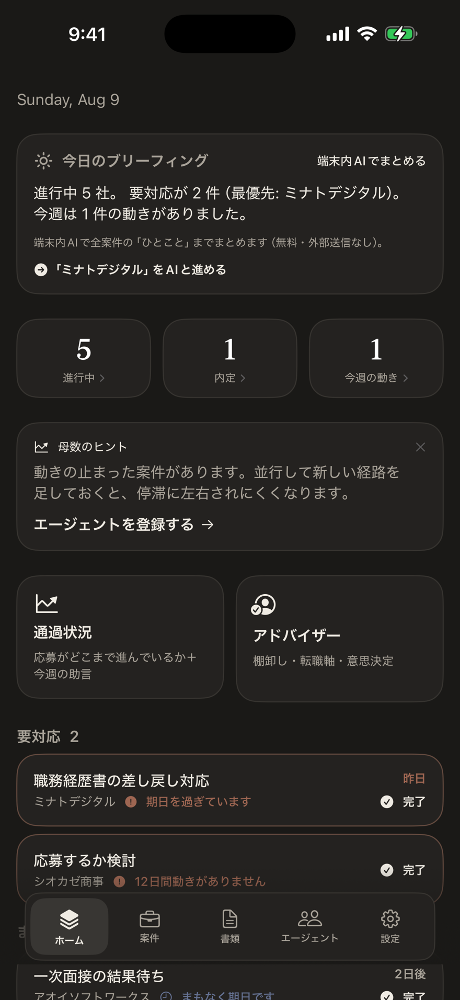
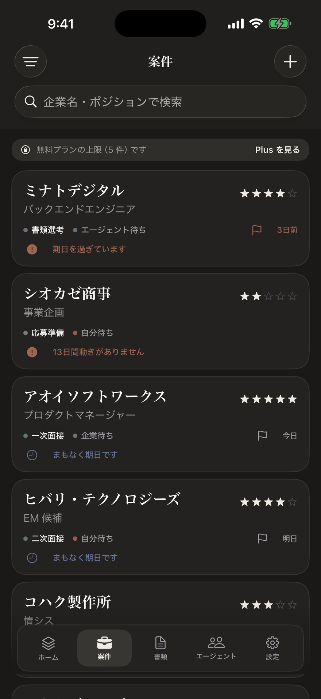
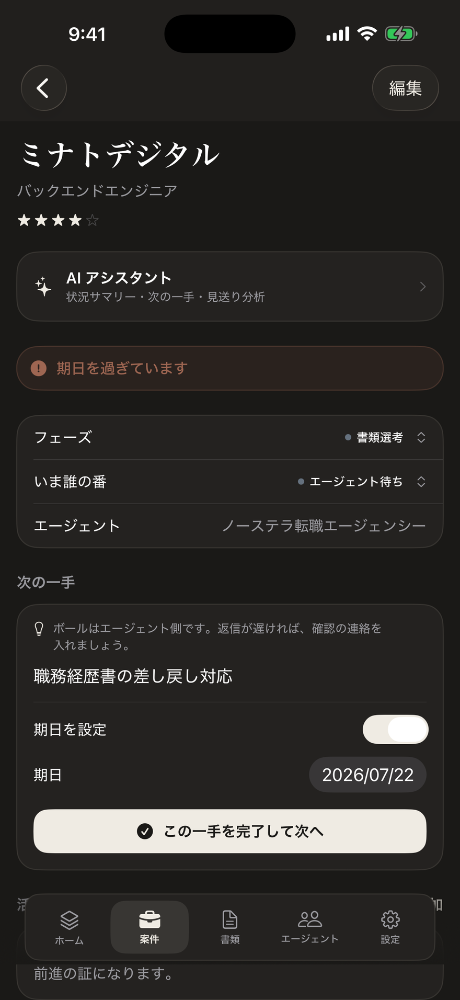
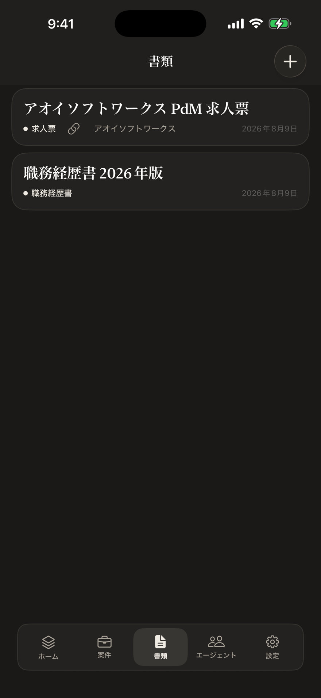
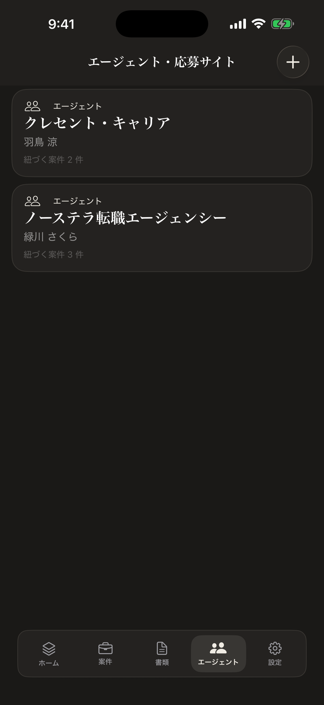
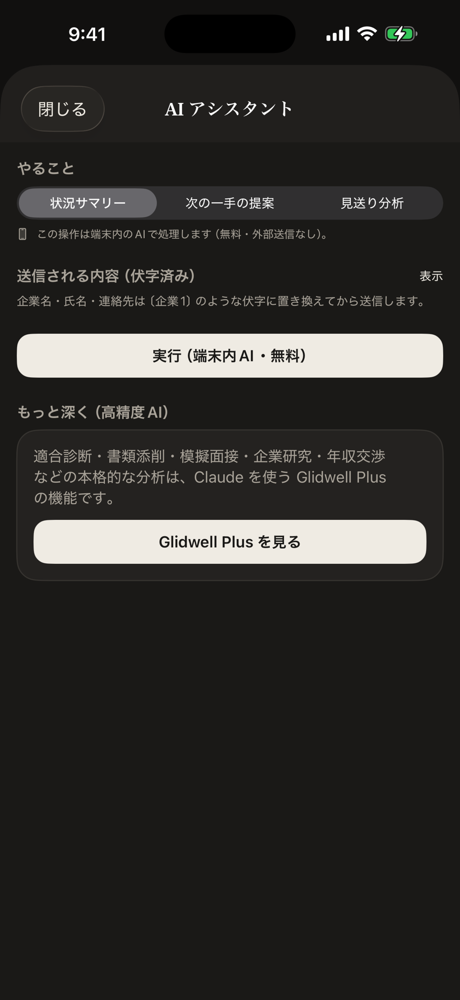

Glidwell を、画面で知る。
複数のエージェントを併用する転職活動を、ひとつに見渡すために。Glidwell の主な画面が、「迷わず次へ進む」ために何をしてくれるのか——ひとつずつ紹介します。

今日やることが、ひと目で決まる。
「今日対応したい案件が2件あります」——朝ひらくと、期日が近い案件や動きが必要なものを静かにまとめます。進行中・内定・今週の動きも、ひと目で。
複数のエージェントを併用しても、全体の現在地が散らばらない。「落ち着いて、ひとつずつ」進められます。

すべての選考を、一枚に並べる。
応募中の企業をカードで一覧。フェーズ（書類選考・一次面接…）、いま誰の番か、期日、手応えの星を、横断で見渡せます。
「12日間動きがありません」のような停滞も、そっと気づかせてくれます。検索で、目的の企業もすぐに。

次の一手と、ボールの所在。
企業ごとに、フェーズ・担当エージェント・次にやること・いま誰の番か（自分／エージェント／企業）を整理。期日を設定すれば、取りこぼしを防ぎます。
「次の一手」を完了すると、次にやることが自然と決まっていきます。

書類を、案件に紐づけて。
職務経歴書・履歴書・求人票（JD）を、テキストやファイルで保存。案件に紐づけておけば、「どの企業に、どの書類を出したか」が散らばりません。
プレビューもアプリの中で。提出物の取り違えを防ぎます。

エージェント別に、案件を束ねる。
複数のエージェントや応募サイトを登録し、それぞれに案件を紐づけ。「この案件は、どの担当経由だったか」がひと目で分かります。
窓口が増えても、つながりが散らからない。応募サイト経由の案件も、同じ場所で束ねられます。

迷ったときの相談相手は、案件の中に。
各案件から AI アシスタントを開くと、「状況サマリー」「次の一手の提案」「見送り分析」をすぐに。いまの状況を読み解き、何から動くべきかを言葉にしてくれます。
面接対策も充実しています。求人票と職務経歴書を突き合わせる適合診断（強み・ギャップ・面接対策）、この案件の想定質問、逆質問の準備、そして模擬面接——本番さながらに練習し、複数の観点でフィードバックまで返します。
AI に送る前に、企業名・氏名・連絡先は自動で伏字に置き換え。送信内容も実行前に確認でき、AI 提供者はデータを学習に使いません。安心して頼れる相談相手です。
あなたの転職は、あなたのもの。
選考状況も書類も、原則あなたの端末の中だけに保存されます。中核機能はネットワーク通信を行わず、行動追跡も広告もありません。詳しくは Glidwell のページ をご覧ください。